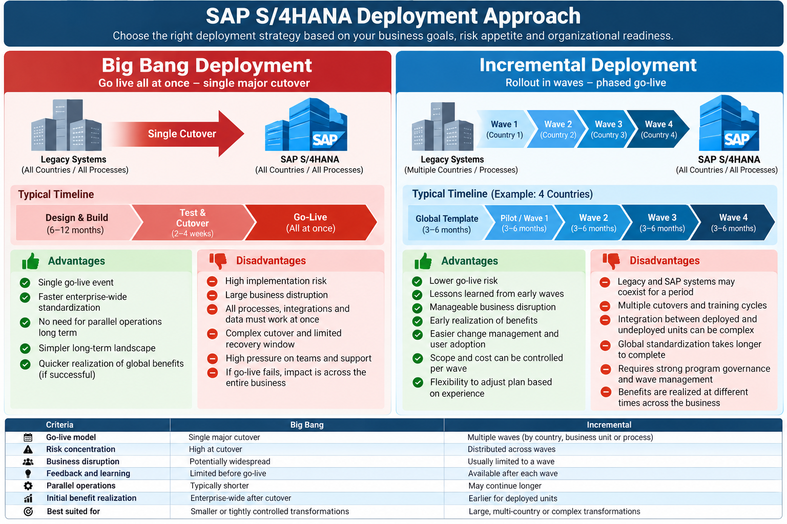

SAP S/4HANA • Program & Delivery Management
SAP S/4HANA Big Bang vs. Incremental Deployment
How to choose a deployment strategy and apply SAP Activate to manage risk, adoption, cost, and business continuity.
A successful SAP S/4HANA implementation is not defined only by the solution being configured. The deployment strategy determines how business units transition to the new platform, how much change the organization absorbs at once, and when value becomes available. Two common choices are Big Bang deployment, where the agreed scope goes live in one major cutover, and Incremental deployment, where business units, countries, or processes go live in planned waves.
1. Deployment strategies at a glance

SAP_S_4HANA_Deployment_Strategies.png in the same repository folder as this HTML file.Big Bang Deployment
Definition: All in-scope entities, core processes, or business units switch to SAP S/4HANA at one coordinated go-live.
Advantages
- One primary cutover event and a shorter period of dual-system operation.
- Faster enterprise-wide adoption of the target template.
- Earlier broad benefits realization if the cutover succeeds.
- Less need to maintain long-running interfaces between old and new platforms.
Disadvantages and risks
- Risk is concentrated around a single go-live date.
- Data, integration, or process defects can affect a large part of the business.
- Cutover, reconciliation, user support, and recovery planning are demanding.
- Disruption may be widespread if critical transactions fail.
Incremental Deployment
Definition: The solution is deployed through sequenced waves, such as by country, business unit, plant, distribution center, or process scope.
Advantages
- Go-live risk is distributed across multiple deployments.
- Lessons from early waves can improve later waves.
- Change impact and training can be managed in smaller groups.
- Benefits can begin accruing to each wave as it goes live.
Disadvantages and risks
- Legacy and SAP systems may need to coexist temporarily.
- Multiple cutovers, rehearsals, and training cycles increase coordination effort.
- Cross-wave integrations, master data, and reporting can become complex.
- Global standardization and full benefits may take longer.
2. Comparison by decision criteria
| Criteria | Big Bang | Incremental |
|---|---|---|
| Go-live model | One coordinated major cutover for the agreed scope. | Multiple planned waves by country, business unit, plant, or process. |
| Risk concentration | High at cutover; broad impact if a critical issue occurs. | Distributed across waves, with readiness gates for each wave. |
| Business disruption | Potentially widespread during transition. | Usually limited to the wave being deployed, provided dependencies are controlled. |
| Feedback and learning | Most operational learning occurs after the main go-live. | Early waves provide evidence and lessons for later deployments. |
| Parallel operations | Often shorter, although reconciliation and legacy retention may still be needed. | May continue longer while waves and legacy environments coexist. |
| Program coordination | Intensive cutover command structure and cross-workstream synchronization. | Strong wave governance, template control, dependency management, and release coordination. |
| Benefits realization | Potentially broad after the single transition stabilizes. | Progressive, wave by wave, with an extended overall realization period. |
| Best suited for | Contained scope, strong readiness, manageable complexity, and a well-rehearsed cutover. | Large or diverse organizations, multiple countries, complex localization, or a need to learn between waves. |
3. SAP Activate methodology: the common foundation
Both strategies use the SAP Activate lifecycle. Deliverables and governance are tailored to the deployment pattern; phase names alone do not determine whether a program is Big Bang or incremental.
- Confirm business drivers, target outcomes, scope, deployment options, and high-level business case.
- Assess the system landscape, transformation constraints, readiness, and major risks.
- Compare deployment scenarios using business criticality, localization, data complexity, and change capacity.
- Establish governance, integrated plan, workstreams, roles, budget, environments, and delivery standards.
- Agree the global template approach, data ownership, integration principles, testing strategy, and change plan.
- Incremental: define wave criteria, sequencing, entry/exit gates, and pilot scope.
- Big Bang: create an integrated cutover strategy, command-center model, business continuity plan, and recovery decision criteria.
- Run fit-to-standard workshops and validate end-to-end processes against SAP standard capabilities.
- Record approved deltas, localization needs, integrations, reporting, roles, and data requirements.
- Incremental: separate global-template decisions from country or site-specific deltas.
- Big Bang: validate cross-functional scenarios and dependencies across the full go-live scope.
- Configure and extend the solution; build integrations, reports, security roles, and migration objects.
- Execute unit, system integration, regression, security, performance, and user acceptance testing as applicable.
- Rehearse data migration, reconciliation, cutover tasks, business sign-offs, and support handover.
- Incremental: use lessons learned while controlling template changes and regression risk.
- Confirm business readiness, defect thresholds, data reconciliation, training, support coverage, and go/no-go approval.
- Big Bang: execute one integrated cutover with a single command structure and agreed recovery decisions.
- Incremental: execute each approved wave, validate local readiness, and authorize the next wave only after exit criteria are met.
- Provide hypercare, triage incidents, monitor service levels, reconcile business results, and transition to steady-state support.
- Track adoption, process performance, data quality, financial controls, and benefits against baseline.
- Incremental: apply structured lessons learned through global-template governance.
4. Big Bang deployment approach using SAP Activate
- Discover and decide: confirm scope is contained, dependencies are understood, business ownership is strong, and the organization can absorb one major transition.
- Prepare one integrated plan: baseline workstreams, cutover dependencies, blackout periods, migration cycles, continuity arrangements, and command-center responsibilities.
- Explore end-to-end: approve fit-to-standard designs and validate complete scenarios across relevant functions such as finance, procurement, order management, manufacturing, and warehousing.
- Realize and rehearse: complete testing, mock conversions, volume checks, role validation, reconciliation, and timed cutover rehearsals with named owners.
- Deploy through a single go/no-go: use evidence-based readiness criteria, execute the runbook, and route decisions through the authorized governance body.
- Run and stabilize: operate a command center, prioritize critical business processes, track incidents and reconciliations, and exit hypercare only when agreed service and business criteria are met.
5. Incremental deployment approach using SAP Activate
- Discover and define the rollout roadmap: group entities or sites into waves based on business similarity, localization, readiness, data quality, dependencies, and operating constraints.
- Prepare the global template and wave governance: establish template ownership, localization rules, release management, wave entry/exit criteria, and a repeatable deployment playbook.
- Explore global and local requirements: standardize core processes where practical; assess country, statutory, tax, language, and site-specific deltas through formal approval.
- Realize the template and wave scope: build and test reusable capabilities, then configure approved local differences. Keep global-template changes controlled and regression-tested.
- Deploy a pilot or first wave: complete local data loads, training, cutover rehearsals, and readiness checks. Capture lessons without bypassing governance.
- Run, learn, and scale: stabilize each wave, measure outcomes, update the playbook, and confirm the next wave is ready. Monitor cross-wave integrations and reporting.
6. Example: four-country SAP S/4HANA rollout
The following is an illustrative scenario for a multinational organization deploying SAP S/4HANA across the USA, Germany, France, and Singapore. It is an example, not a claim about a specific customer implementation.
| Stage | Illustrative activities | Program gate / evidence |
|---|---|---|
| Global template | Define standard processes, data model, roles, integrations, controls, and reporting. | Design authority approves the template and delta policy. |
| Wave 1: pilot entity | Deploy core template; validate migration and support model; capture lessons. | Stability, reconciliation, adoption, and support exit criteria achieved. |
| Wave 2: similar entities | Reuse proven assets and playbook; configure approved localization. | Country readiness, statutory validation, testing, and cutover approval. |
| Wave 3: remaining entities | Apply updated playbook; resolve remaining dependencies and approved deltas. | Wave readiness and cross-entity integration checks completed. |
| Global stabilization | Transition to operations, optimize processes, track benefits, and plan legacy retirement. | Service acceptance, control sign-off, and benefits ownership confirmed. |
7. Common challenges and mitigation
| Challenge | Potential impact | Program management response |
|---|---|---|
| Scope growth and template drift | More build effort, rework, and inconsistent processes. | Use fit-to-standard, design authority, formal change control, and a delta register. |
| Poor data quality | Migration failures, inaccurate balances, and operational delays. | Assign data owners; profile, cleanse, mock-load, reconcile, and obtain business sign-off. |
| Integration dependencies | End-to-end processes fail across SAP and external systems. | Maintain interface inventory, named owners, contract tests, end-to-end scenarios, and dependency tracking. |
| Insufficient business readiness | Low adoption, workarounds, and productivity loss. | Track role-based training, super-user coverage, communications, simulations, and readiness attestations. |
| Localization gaps | Tax, statutory, language, or reporting non-compliance. | Engage local process and compliance owners early; validate requirements and approvals. |
| Cutover overrun | Extended downtime or delayed business opening. | Use timed rehearsals, task dependencies, named decision-makers, contingency buffers, and recovery criteria. |
| Wave dependency conflicts | Cross-entity transactions and reporting become inconsistent. | Plan transitional operating models, coexistence interfaces, reconciliation, and legacy-retirement milestones. |
8. Program Manager's decision framework
Choose the deployment model based on evidence rather than preference. A hybrid strategy can also be appropriate—for example, Big Bang within a tightly integrated business unit, followed by incremental country waves.
- Business scope: Can the organization transition all in-scope operations together without unacceptable disruption?
- Template maturity: Are process designs, integrations, roles, and controls stable enough for the chosen scope?
- Data and integration readiness: Have migration volumes, data quality, interfaces, reconciliation, and recovery been proven?
- Localization: Are country-specific tax, statutory, language, and reporting requirements understood and approved?
- Change capacity: Can the business train users, backfill key roles, and sustain operations through transition?
- Economics and timing: Compare total cost, parallel-running costs, cutover risk, time to value, and delayed-benefit costs.
- Governance: Are decision rights, go/no-go criteria, escalation paths, and executive sponsorship explicit?
9. Recommended program KPIs
| Measure | What it tells the program |
|---|---|
| Milestone and wave readiness | Whether planned scope is progressing and each release meets entry/exit criteria. |
| Critical defects and defect aging | Whether material business risks are resolved before go-live. |
| Migration reconciliation rate | Whether migrated records, balances, and key totals reconcile to approved source baselines. |
| Cutover task completion and duration | Whether transition can complete within the approved downtime window. |
| Training and adoption | Whether impacted users are prepared and can perform their roles. |
| Hypercare incidents and service levels | Whether the solution is stabilizing and support is meeting agreed thresholds. |
| Benefits realization | Whether outcomes such as cycle time, inventory, close duration, or process efficiency improve against baseline. |
Set KPI targets with business owners and establish baselines before deployment. Illustrative measures are not universal SAP benchmarks.
Program Management Takeaway
Big Bang concentrates transition effort and risk into one major event; Incremental deployment spreads the transition across controlled waves and creates opportunities to learn. Neither model is automatically faster, cheaper, or safer in every context.
The Program Manager must align the deployment choice with business risk appetite, solution maturity, data and integration readiness, localization complexity, change capacity, and time-to-value objectives. Use SAP Activate to structure delivery, and clear governance gates to prove readiness—not simply to report progress.